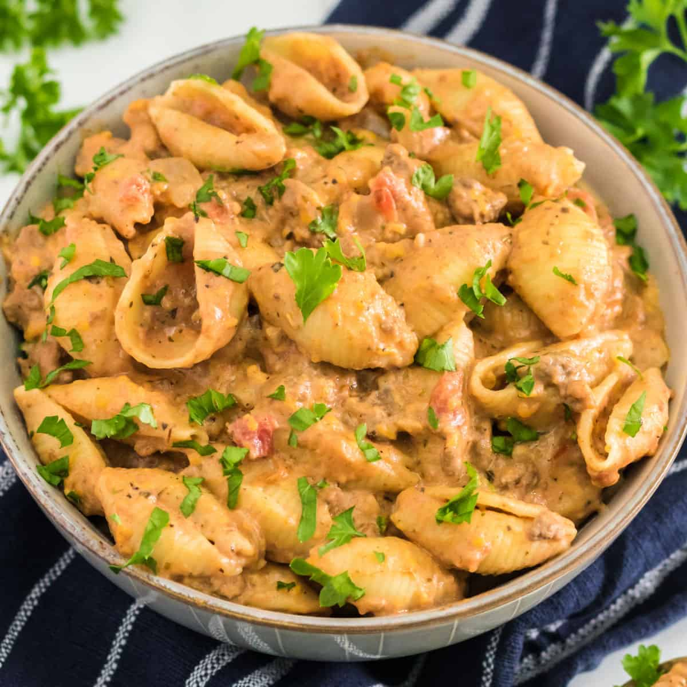

Cheesy Honey Beef Pasta Recipe

This sweet, creamy pasta is a delicious meal that anyone can enjoy. High in carbs and protein,
this filling dish is quick and easy to make.
Ingredients
- 300g of shell pasta
- 500g of ground beef
- 1 onion, finely diced
- 1 tbsp of garlic powder
- 1 tbsp of paprika
- 2 tbsp of fajita seasoning
- 3 tsp of garlic puree
- 2 tbsp of tomato puree
- 1 tbsp of honey
- 300ml of beef stock
- 120ml single cream, or heavy cream
- 60g of mozzarella
- Dash of salt and pepper
- Optional: Parsley and chili flakes
How to Make
- Boil pasta in salt water, follow packaging cooking time
- Fry beef in large pan until in starts to brown
- Add garlic powder, paprika, and fajita seasoning, and mix
- Add diced onions, cook until soft
- Add honey, garlic puree, and tomato puree, cook for a few minutes while stirring
- Add stock and cream, simmer until sauce has thickened
- Add pasta, mozzarella, and remaining seasoning
- Mix until cheese has melted, then serve